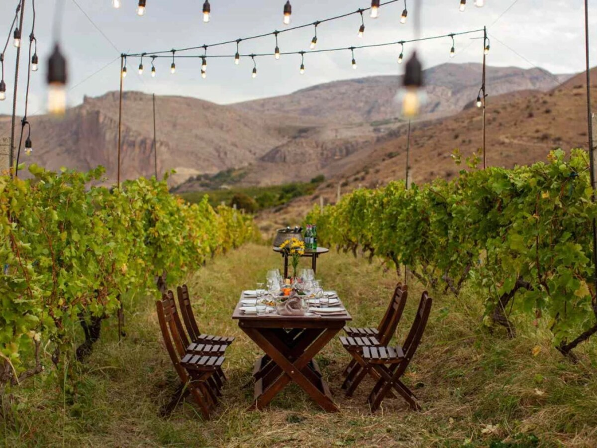

Areni-1 Cave
Explore the archaeological site associated with ancient winemaking and remarkable discoveries.

Flavours & Traditions
Ancient winemaking, dramatic valleys and generous tables in Vayots Dzor.
Armenia’s wine country combines one of the world’s oldest winemaking stories with modern boutique wineries, indigenous grapes, mountain scenery and memorable food experiences.
Flavours & Traditions
In the Areni-1 cave complex, archaeologists uncovered evidence of a wine-production facility dating back more than six thousand years. The discovery reflects the extraordinary depth of Armenia’s relationship with the vine.
Today Vayots Dzor is the heart of the country’s modern wine revival. High-elevation vineyards, volcanic soils and native grapes—especially Areni Noir—support expressive wines and a growing community of thoughtful producers.
Explore
Explore the archaeological site associated with ancient winemaking and remarkable discoveries.
Meet producers, learn about native varieties and enjoy guided tastings in vineyards or cellars.
Visit a masterpiece of medieval architecture framed by dramatic red cliffs.
Discover the living center of the region’s winemaking culture and seasonal harvest traditions.
Enjoy local food and wine at a thoughtfully prepared table among the vines.
Travel through narrow gorges, open plateaus and mountain roads shaped by geology and time.
Taste the region through its people
Begin with the ancient cave, continue to a family or boutique winery, walk among vines and listen to the producer’s story. A slow lunch paired with local wines turns the day into a genuine encounter with Armenian land and hospitality.
Wine and gastronomy
Pair Areni wines with Armenian cheeses, herbs, grilled vegetables, meats, tolma, lavash, dried fruit and regional sweets. Tastings range from informal family cellars to polished contemporary wine experiences.
When to visit
May to June is green and mild, while September and October bring harvest energy, warm colors and wine events. Summer is dry and sunny; winter is quieter and some vineyard activities may be limited.